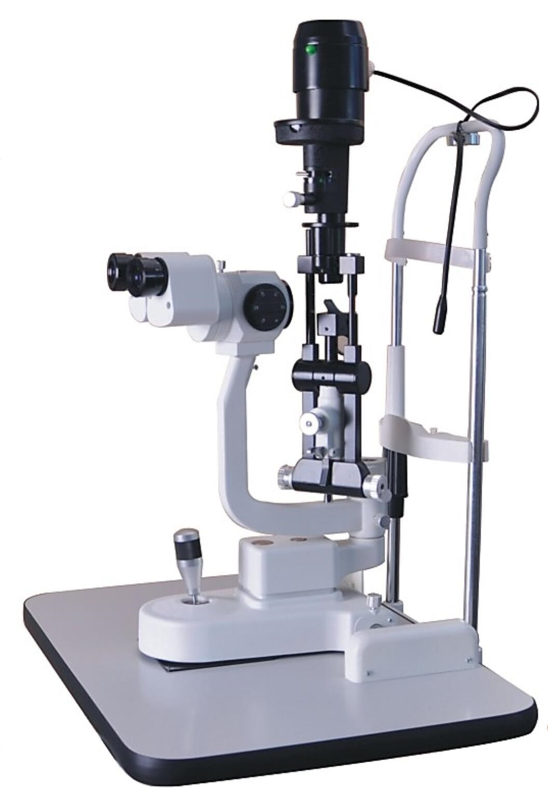
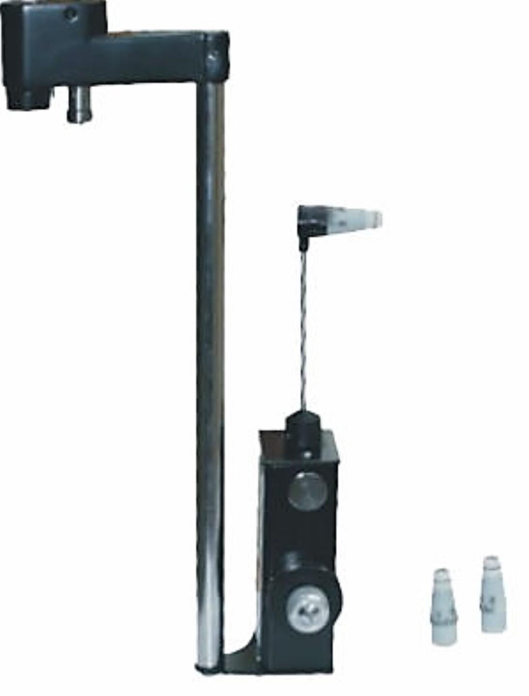

Ing. Jorge Martínez
Equipos médicos y de lavandería industrial a menor precio y con garantía!
Tag
Quienes Somos
Productos
Servicios
Ventajas
Contacto
Lámpara de Hendidura, Tonómetro
Home
Atrás
Lámpara de hendidura de 5 pasos
AME-5D

Tonómetro
YZ30R

X
Lámpara de hendidura de 5 pasos AME-5D
La óptica galileana le da a esta lámpara de hendidura una gran profundidad de campo
La rotación del tambor hace que el aumento de 5 pasos sea conveniente para cambiar
La bombilla y la lente óptica de vidrio son importadas de Alemania
Todas las lentes son multicapa, antimoho y antirreflectantes
Todos los adaptadores son universales
Ampliación total y diámetro del campo visual (mm): 6x, 10x, 16x, 25x, 40x
Rango ajustable de distancia de la pupila (mm): 55 ~ 75
Dioptría ajustable: -5D ~ + 5D
Filtros: absorción de calor, gris, rojo libre, azul cobalto
Illumination Bulb: 12V / 30W or 12V/50W halogen bulb
Voltaje / frecuencia: AC220V, 50Hz o AC110V, 60Hz
Potencia: 60VA
Peso total: 46 kg
X
Tonómetro YZ30R
Los productos están diseñados sobre la base de los principios del tonómetro Goldman
Hay tres tipos disponibles: los tipos R y T son adecuados para una lámpara de hendidura de tipo stigit
Mientras que el tipo X es adecuado para la lámpara de hendidura tipo Carl Zeiss
No solo se usa para examinar los ojos, sino que también mide la presión intraocular mientras se trabaja debajo de la lámpara de hendidura
La medición precisa garantiza una tolerancia total inferior a 0.066KPa (0.5mmHg)
Directamente obtener la presión intraocular
La presión intraocular medida no se verá afectada por la dureza del ojo
La presión de medición ajustable garantiza la estabilidad de trabajo y la medición precisa del tonómetro durante mucho tiempo